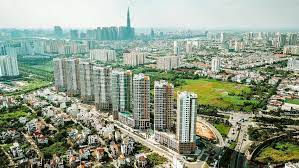

Enjoy your stay in Ho Chi Minh
.
Ho Chi Minh, Vietnam's biggest economic hub, is home to the city of Ho Chi Minh. It can be found on the banks of River Saigon at 60 km from South China Ocean. The city is also located 1,760 kilometers south of capital Hanoi. Ho Chi's rich cultural heritage and history has attracted many tourists over the years. While some people travel to Ho Chi as professionals, others come as students. It has a lively central business district, surrounded small towns with a combined 9 million residents.
You want to feel instantly at home when you are there. It is unlikely that you will feel at home in your hotel room. Most expats and long-term business travelers prefer to rent space for their accommodation. When signing a lease agreement, it is common to pay a 3 month deposit. In some cases, the tenant may ask for a six-month payment in advance. Additional utilities, such as internet access, garbage collection and cable TV, cho thuê biệt thự Vinhomes Riverside may be required in certain cases. There are many furnished homes available throughout the city. However, they are usually designed to suit the owner's tastes and preferences. It is possible to negotiate with landlords for unfurnished homes to purchase furniture and property tailored to your personal tastes. This decision will depend on the length of your stay. Tap water is not suitable for drinking, but can be used to clean dishes or brush teeth. Bottled water is available at your doorstep, or you can buy it from local shops.
Facilities
The apartments for rent in Ho Chi Minh offer modern amenities such as satellite television, internet access and a private balcony. Renters can enjoy luxurious homes that are well-designed and provide great comfort. A swimming pool, business center, and fitness room are some of the other amenities available to tenants. Some apartments feature living rooms equipped with plasma TVs, DVD players and leather sofa sets. You can even cook your own meals in the kitchen. You can relax in your en suite bathroom with its beautiful tubs. On request, management can arrange for daily breakfast in your serviced apartment.
A short distance from the airport are many good rental apartments. They are great for travelers who need to travel across the country or in the South-East Asian regions but don’t want to spend too much time driving to the airport. You should consider accommodation that is pet-friendly and has play areas that your children can enjoy if you are travelling with your kids.

Visitors are required to obtain a visa before entering Vietnam. This visa is valid for 3 months and can be obtained at the Vietnam international airport. If they are visiting Vietnam to work, foreigners can obtain these documents from their sponsoring organisation. For a 3-3-6 month vocational visa, you will need to provide an assignment letter and a passport. To ensure identification, visitors are required to register their names immediately upon arriving in the city.
The security and proximity of social amenities should be your top priorities when looking for suitable houses to rent in Ho Chi Minh. thuê biệt thự Vinhomes Riverside Expats like to live in close-knit neighborhoods that provide safety and stability. Phu My Hung (7th District) and Thao Dien (2nd District) are the most popular. The outskirts of the city have many large, luxurious villas. They are affordable and come with private swimming pools. Before visiting the city, it is possible to conduct an online search to find high-quality homes.
Enjoy your trip to Vietnam, even if you're on business. Snap Real Estate can help you find apartments to rent in Ho Chi Minh. They can provide you with more options that will benefit your stay as well as your business. Snap Real Estate is the preferred choice of many businessmen to search for houses to rent in Ho Chi Minh. This allows them to save time while still getting satisfied houses.